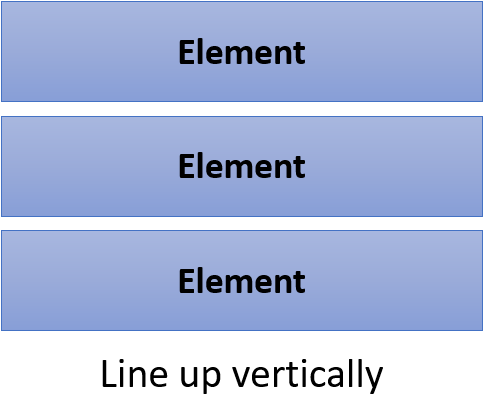
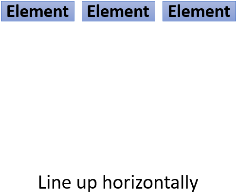
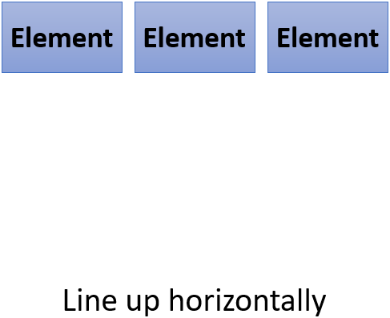

The way to use display property
Display, the property is used to how the elements will be displayed in the web sites. There are mainly four values following for this property.
-
block : Elements occupy 100% width of parent elements, and it line up vertically
p, div, ul, h1〜h6 etc. tags are block-level elements -
inline : Elements line up horizontally
a, span, img etc. tags are inline elements - inline-block : Elements line up horizontally, and its size is adjustable
- none : Elements are removed from layout
Made a list of behaviors of this property as follows.
| display: | block | inline | inline-block |
|---|---|---|---|
| How elements line up |  |  |  |
| width & height | Adjustable |
Adjustable in the case of horizontal, but non-adjustable for vertical margin Vertical padding is adjustable, but it will be pilled up on top and bottom lines |
Adjustable |
| text-align | Not adjustable | Adjustable (Set on the parent element) | Adjustable (Set on the parent element) |
| vertical-align | Not adjustable | Adjustable | Adjustable |
You can change feature of element by using display property even if it is inappropriate one.
Style as you like using display!